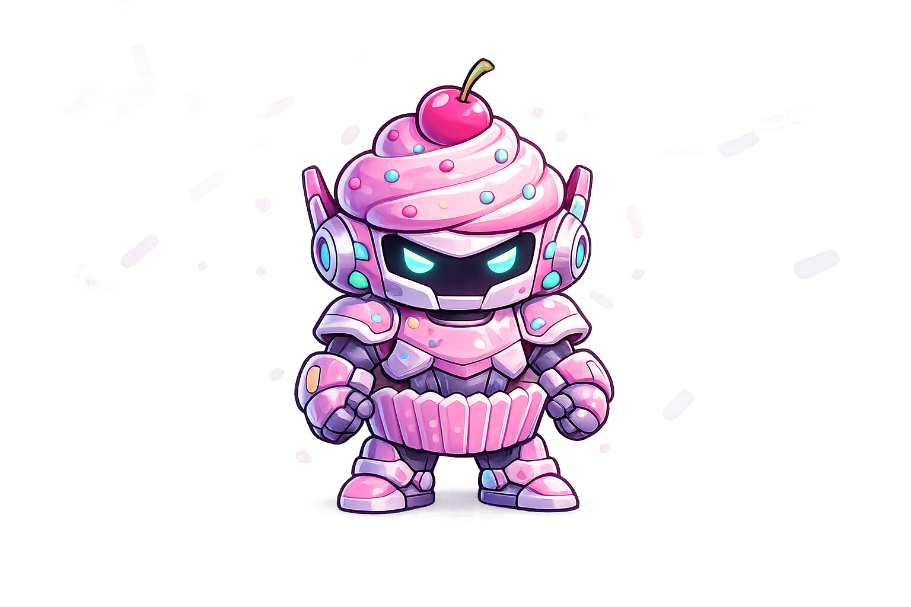
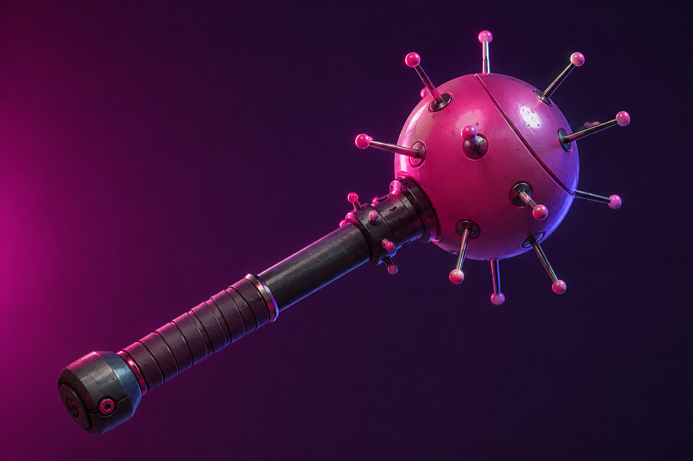
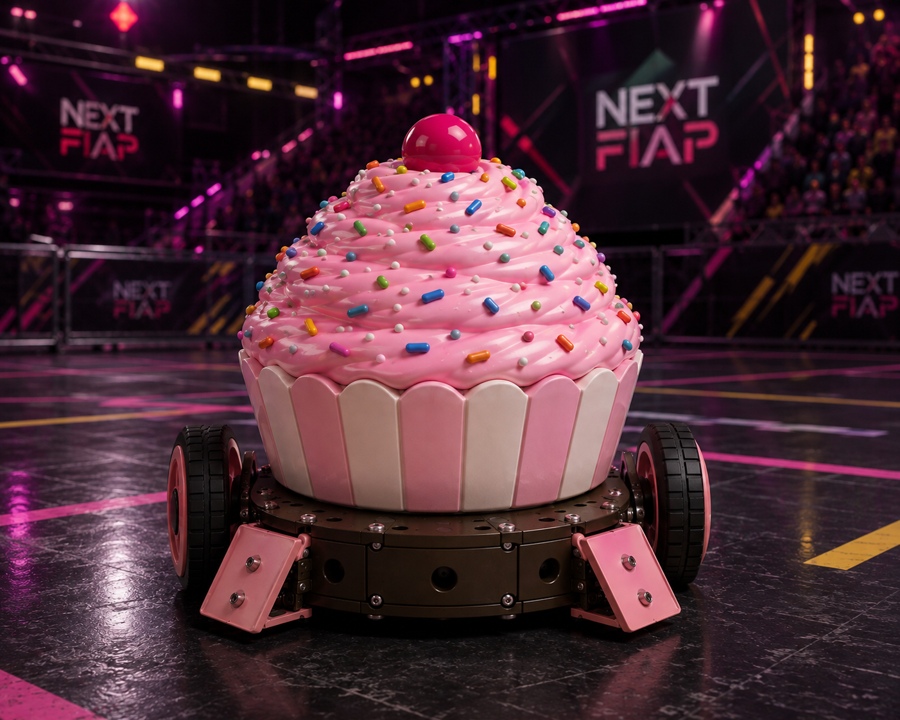
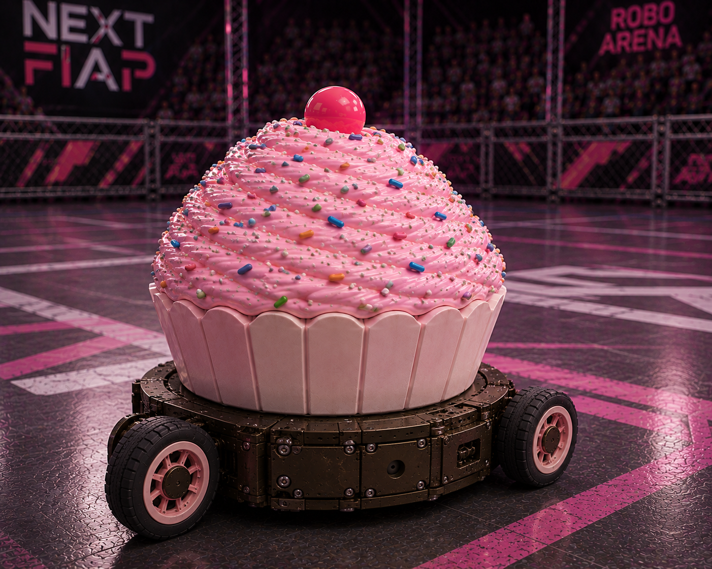
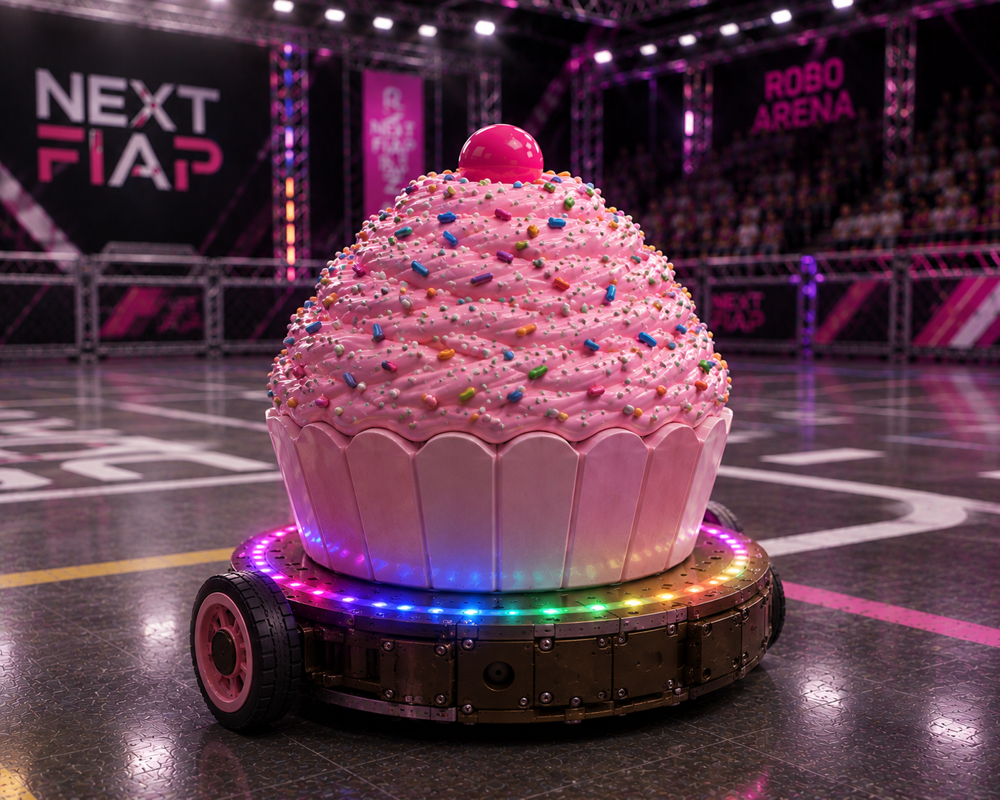
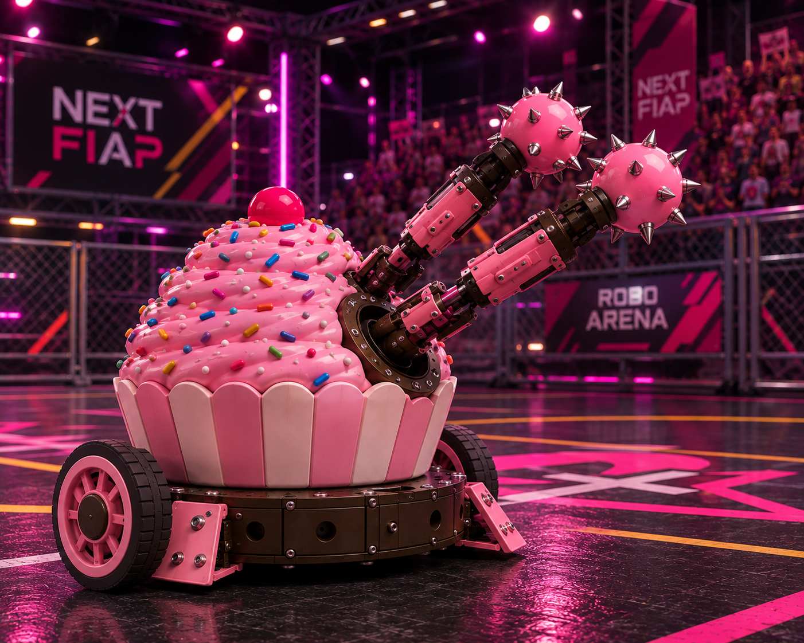
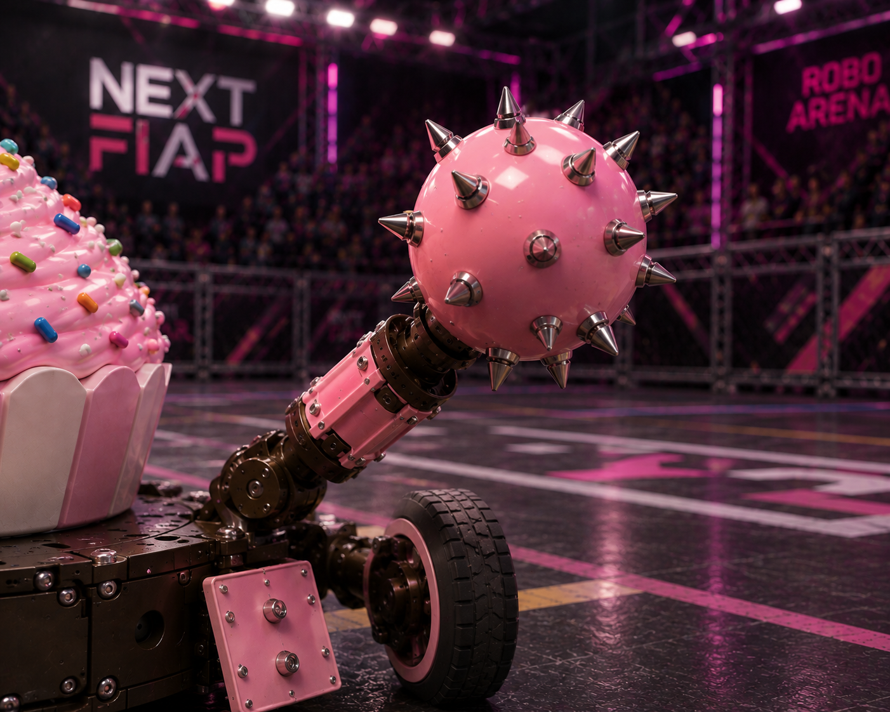

SOBRE O ROBÔ
O lado doce da robótica
O Sweet Destruction nasceu da união entre criatividade, tecnologia e competição. Inspirado no universo dos cupcakes, o projeto transforma uma estética delicada em um robô preparado para enfrentar os desafios da arena.
01
DESIGN
Identidade inspirada no universo dos cupcakes.
02
TECNOLOGIA
Estrutura desenvolvida para a competição.
03
ARENA
Doce no visual. Forte na batalha.
⚡ SISTEMA DE ATAQUE
Arma
Um ataque inesperado
A arma do Sweet Destruction foi desenvolvida para transformar seu visual delicado em uma estratégia de ataque. Localizada na parte frontal do robô, ela utiliza uma esfera com pontas que, através de seu movimento, gera impacto contra o adversário durante a batalha. A combinação entre força, movimento e precisão permite que o robô surpreenda na arena.

DOCUMENTAÇÃO VISUAL
Galeria






⚙️ TECNOLOGIA DO PROJETO
Hardware
Base e controle
A base do Sweet Destruction é formada por uma estrutura circular de MDF, equipada com dois motores e rodas de borracha para a locomoção. O sistema eletrônico reúne Arduino, ponte H, três baterias recarregáveis, sensores de contato e módulo Bluetooth, além da fiação necessária para as conexões. Ao redor da base, foi instalada uma fita de LED de 1 metro, enquanto duas rodas bobas metálicas complementam a estrutura.
Arma deslizante
A arma deslizante é composta por um propulsor e uma estrutura formada por duas peças laterais de MDF, sendo uma maior e outra menor. Na parte frontal, a estrutura utiliza uma bolinha de isopor com agulhas fixadas nas extremidades, formando o conjunto da arma.
🎥 VÍDEOS DO PROJETO
Sweet Destruction em ação
Sweet Destruction em movimento
EQUIPE

Gabriella Canabarra
Estudante de Sistemas de Informação, responsável pelo desenvolvimento do projeto.
ACESSE O LINKEDINGabrielle Gomez
Estudante de Sistemas de Informação, responsável pelo desenvolvimento do projeto.
ACESSE O LINKEDINLarissa Gomez
Estudante de Sistemas de Informação, responsável pelo desenvolvimento do projeto.
ACESSE O LINKEDIN
Nicolle Gomez
Estudante de Sistemas de Informação, responsável pelo desenvolvimento do projeto.
ACESSE O LINKEDIN